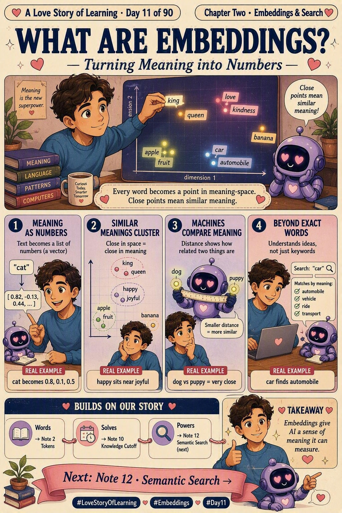

📜 The 30-second brief
An embedding is a way of turning a piece of text — a word, a sentence, a whole document — into a list of numbers called a vector. That list captures the text's meaning, not its spelling. Words with similar meanings get similar numbers, so they land close together in an imaginary "meaning-space."
Why should you care? Because this single idea is what lets AI search by meaning, recommend related things, and — most importantly for us — look things up to fix the knowledge-cutoff problem we ended Chapter One on. Embeddings are the foundation of everything in Chapter Two. 💕
💌 A fresh analogy: a map of meanings
Imagine a giant map where every word is a pin. On this map, king and queen sit right next to each other. Happy and joyful are neighbours. Banana is way over in another corner near apple and fruit — and nowhere near king.
Nobody placed those pins by hand. The model learned the layout from how words are used together in billions of sentences. An embedding is simply the coordinates of a word's pin on that map. Closer pins = closer meanings. That's the whole magic. 🗺️💛
🔢 How it actually works
| Idea | What happens | Everyday example |
|---|---|---|
| Meaning → numbers | Text is converted into a vector, e.g. cat → [0.82, -0.13, 0.44, …] | "cat" becomes a row of numbers |
| Similar → close | Similar meanings get similar vectors, so they sit near each other | "happy" sits right beside "joyful" |
| Compare by distance | The model measures the gap between two vectors to judge relatedness | "dog" vs "puppy" = very close |
| Beyond exact words | Matches ideas, not spelling — so different words with the same meaning connect | "car" finds "automobile" |
Note: real embeddings have hundreds or thousands of numbers per vector, not three — but the intuition is identical: meaning becomes a location.
🧵 How this builds on our story
| Embeddings… | …connect to | The thread |
|---|---|---|
| Start from words | Note 2 · Tokens | Tokens were the text pieces AI reads. Embeddings give each of those pieces a meaning-coordinate. |
| Solve the frozen memory | Note 10 · Knowledge Cutoff | The limitation we couldn't beat in Chapter One. Embeddings let AI search real documents instead of guessing from an old memory. |
| Power the next step | Note 12 · Semantic Search | Once meaning is a location, we can search by meaning — that's tomorrow's note. 💕 |
💡 Why it matters
- Search that understands you. Find things by meaning, even if you use different words.
- Recommendations. "You liked this" works because similar items sit close in embedding space.
- The heart of RAG. Retrieval-Augmented Generation uses embeddings to fetch the right facts before the AI answers.
- Deduplication & clustering. Group similar tickets, docs, or questions automatically.
🏭 Real-world example: the support inbox
A customer writes "I can't log in." Another writes "sign-in isn't working." Keyword matching sees two different sentences. Embeddings see the same meaning — both vectors land in the same neighbourhood — so the system instantly links them to the same known fix. Different words, one meaning, one answer. That's embeddings quietly doing the work. 🎯
⚠️ Common misconceptions
- "Embeddings store the actual words." No — they store meaning as numbers, not the text itself.
- "Same spelling = same embedding." Not always — "bank" (river) and "bank" (money) can differ by context in modern models.
- "More numbers = always better." No — bigger vectors cost more; the right size depends on the task.
- "Embeddings understand like humans." No — they capture statistical meaning from data, not lived understanding.
🎓 Quick self-test
- What is an embedding?
A vector (list of numbers) that represents the meaning of text. - Why do similar words end up close?
Because the model learned similar usage patterns, giving them similar vectors. - How does a machine judge similarity?
By measuring the distance between two vectors. - How do embeddings help with the knowledge cutoff?
They let AI retrieve real, current documents by meaning instead of relying on old memory.
📚 Key terms
- Embedding — a numeric vector representing meaning.
- Vector — an ordered list of numbers.
- Meaning-space — the imaginary map where similar meanings sit close together.
- Distance / similarity — how related two vectors (meanings) are.
- Embedding model — the model that converts text into vectors.
⚡ 60-second flashcard
| Define it in one breath | Turning meaning into numbers AI can compare. |
| The mental model | A map where every word is a pin; close pins = close meaning. |
| The magic move | "car" can find "automobile" because meaning, not spelling, decides closeness. |
| Builds on | Note 2 Tokens. |
| Solves | Note 10 Knowledge Cutoff (by enabling retrieval). |
| Leads to | Note 12 Semantic Search. |
| Interview line | "Embeddings map text to vectors so meaning becomes measurable distance." |
🖼️ Today's cheat sheet

✨ Next spark
Now that meaning has a location, we can do something powerful: search by what you mean instead of the exact words you type. Ask for "how to fix a flat tyre" and get back "repairing a punctured wheel." That's Note 12 · Semantic Search. 💕